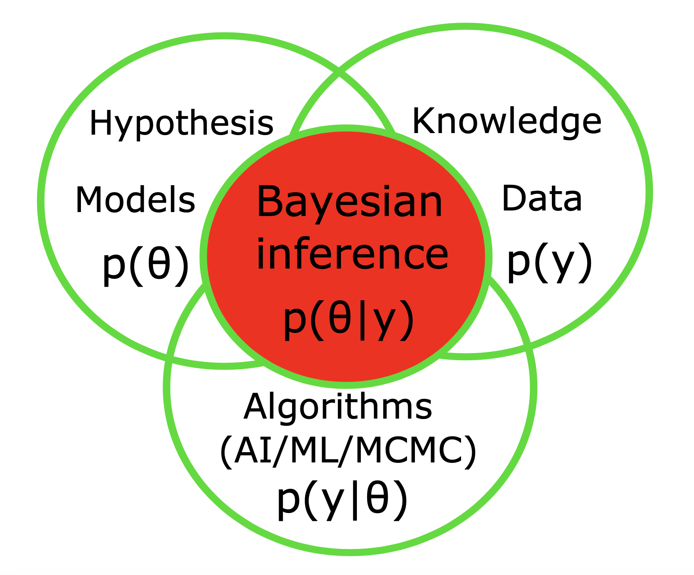

Wellcome to my page!
Currently, I am a senior research flow at INS (UMR1106), under the direction of Prof. Viktor Jirsa.
My work aims to infer the dynamics of personalized virtual brain models using Bayesian framework.
I have received my PhD in computer science from INRIA Grand-Est.
I have received my MSc in Physics (soft condensed matter) from IASBS.
Hire me for consulting services and tutorials!
My expertise includes data science, Bayesian inference on complex systems, probabilistic artificial intelligence (AI), and machine learning (ML), computational neuroscience, dynamical system identification, and pharmacometrics analysis (PK/PD models), with applications to improve diagnostics, interventions, therapies and decision-making for brain-related medicine and digital health.}
I perform probabilistic inference for:
Cohort studies, focusing on longitudinal trajectories, which do not necessarily require a control group.
Case-Control studies, disregarding heterogeneity and instead focusing on the average patient (a potential predictor for rare outcomes). This approach, however, is noninformative for constructing models in brain diseases such as neurodegenerative and psychiatric disorders.
Normative studies, an emerging approach for quantifying and describing how individuals deviate from expected patterns learned from a healthy population, using Generalized Additive Model for Location, Scale and Shape (GAMLSS) models.
Personalized Causal studies in precision medicine, focusing on the individualized anatomical data, mechanistic models, with the state-of-the-art probabilistic inference methods, such as adaptive Hamiltonian Monte Carlo and Normalizing Flows.
My tools for identifying spatiotemporal patterns emerging from high-dimensional nonlinear complex systems are automatic and flexible, employing SATO inference algorithms; adaptive Markov Chain Monte Carlo (MCMC) sampling in probabilistic programming languages, deep neural density estimators such as Masked Autoregressive Flows (MAFs) for simulation-based inference, and Normalizing Flows (NFs) and Variational Autoencoders (VAEs) for deep generative modeling.
In particular, I am interested in building causal virtual brain models (aka digital brain twins), i.e., generative dynamical network models combined with probabilistic AI/ML, that can provide clinicians with a more effective treatment for drug-resistant patients, while also providing flexible and fast workflow for hypothesis testing, drug discovery, and drug insensitivity analysis in a digital environment.
I have developed spiking, mass, mean-field, and artificial neural network models to fit neurophysiological data, including SEEG, EEG, MEG, and fMRI. These models aim to reveal causal mechanisms in neurological disorders such as epilepsy, Alzheimer's, Parkinson's, multiple sclerosis, and alcohol use disorder (AUD), as well as in general anesthesia and healthy aging.
I have worked tightly with scientist, engineers and medical doctors in hospitals (e.g., La Timon Marseille) and industrial companies (e.g., SATT Sud-Est).
I have multiple patents (e.g., BVEP), and software development currently used in clinical trials (EPINOV
I have extensively used the softwares: TVB, Stan, PyMC3, NumPyro, scikit-learn, SBI.
I mainly program using Python, PyTorch, and TensorFlow.
My research goal is to build the theory, tools, and applications for causal virtual brain models, with perturbed dynamics, by integrating various sources of information, such as high-resolution neural (mass/field) models, anatomical data, neuroimaging recordings, advanced probabilistic machine learning, in a unified framework called the Bayesian Virtual Brain (BVB). This could provide reliable in-silico interventions such as closed-loop neurostimulator, digital drugs, as well as accurate and reliable predictions on brain trajectories in individuals suffering from brain diseases, particularly drug-resistant patients, for interventions, therapies, decision-making processes and clinical trials.
